使い方
地図の画面の操作、設定画面（メニュー）の各項目、未取得駅の管理、オフラインでの使用について説明します。計算の方法は計算の仕組みをご覧ください。
地図の画面
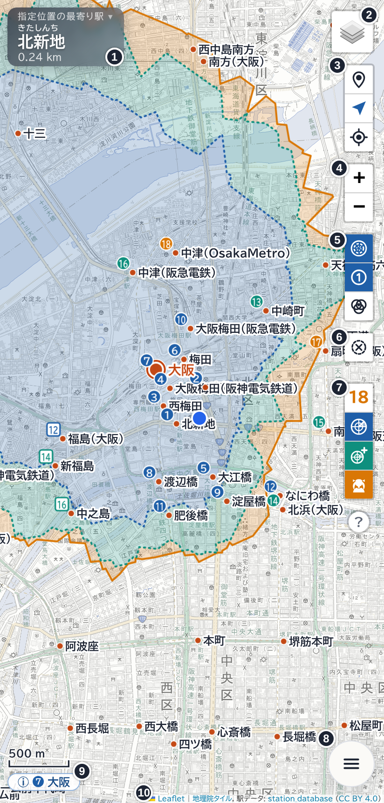
| 番号 | 名前 | 説明 |
|---|---|---|
| ① | 最寄り駅の案内 | 現在地（または指定位置）の最寄り駅と距離を表示します。タップすると順位の一覧が開きます。 |
| ② | レイヤー | 地図の種類（OpenStreetMap・地理院 淡色・地理院 標準）を切り替えます。 |
| ③ | 現在地のボタン | 上から、位置情報の利用、現在地を常に中心に保つ、現在地を中心に表示、の 3 つです。 |
| ④ | 拡大・縮小 | 地図のズームレベルを変えます。 |
| ⑤ | 表示ボタン | 上から、アイテム・スキルごとの塗り分け、順位の表示、複数選択モード、の 3 つです。 |
| ⑥ | 選択解除 | 駅の選択を解除します。解除する駅がないときは薄く表示されます。 |
| ⑦ | レーダーの数とアイテム・スキル | いまの検知数と、レーダー・レーダーブースター・なつめのスキルのオン／オフです。 |
| ⑧ | メニュー | 設定画面（メニュー）を開きます。 |
| ⑨ | 選んだ駅の情報 | 選んだ駅の名前のバッジです。タップすると、面積などの情報が開きます。 |
| ⑩ | 出典表示 | 地図と駅データの出典です。起動直後の数秒間は、先頭に非公式ツールであることを表示します。 |
右の列のいちばん下（コンパクト表示では左の列のいちばん下）の丸い［?］をタップすると、このページ（使い方）を別のタブで開きます。
PC など幅の広い画面では、メニューが左側に開きます。ボタンにマウスを乗せると、ボタンの説明が表示されます。
駅を選ぶ
駅を選ぶと、その駅にアクセスできるエリアを地図に表示します。
- 地図上の駅の点をタップ（PC はクリック）すると、その駅を選択します。
- メニューの［駅を検索］に駅名かよみを入力し、候補をタップしても選択できます。キーボードの検索のキー（Enter）を押すと、候補の先頭の駅を選択します。検索で駅を選択したときは、［常に中心に保つ］を一時的にオフにします。選択を解除するか、［いますぐ現在地を中心に］をタップすると、元に戻ります。一時的にオフにしている間は、［常に中心に保つ］のボタンを青い一時停止の記号（⏸）で表示します。このボタンをタップしても元に戻ります。
- ⑥［選択解除］をタップすると、選択を解除します。
［自動で拡大・縮小する］（〈表示〉、既定はオフ）をオンにすると、駅を選んだときにエリア全体が入るようにズームレベルを調整します。オフのときは、駅を地図の中心に移すだけです。
エリアの見方

塗られたエリアの中にいれば、レーダーでその駅にアクセスできます。エリアは、選んだ駅がレーダーの検知対象（検知数の順位以内）に入る地域です。
［レーダー］をオフにすると、位置登録でアクセスできるエリア（その駅が最寄り駅になる地域）を表示します。
既定では、アイテム・スキルごとに色を分けて塗ります（［選択駅にアクセスできるエリアを、アイテム・スキルごとに塗り分ける］、既定はオン）。
- 青 レーダーの検知数（通常時）で届くエリア
- 緑 レーダーブースターを使うと届くエリア
- 橙 なつめのスキルを使うと届くエリア
いちばん外側の境界は実線、内側の境界は点線で表示します。⑤ のいちばん上のボタンで、塗り分けのオン／オフを切り替えられます。オフのときは、いちばん外側のエリアだけを表示します。
エリアはこのアプリの計算による推定です。ゲームの実際の判定と一致することは保証しません。計算の方法は計算の仕組みをご覧ください。
選んだ駅の情報
駅を選ぶと、画面の左下に ⑨ のバッジ（「ⓘ 駅名」）が出ます。バッジをタップすると、次の情報の帯が 6 秒間開きます。帯の余白をタップすると、すぐに閉じます。
現在地（または指定位置）からその駅に届くときは、バッジの駅名の前に、地図の番号と同じ形で順位を表示します。レーダーで届くときは丸、オモイダースでだけ届くときは四角です。届かないときは表示しません。
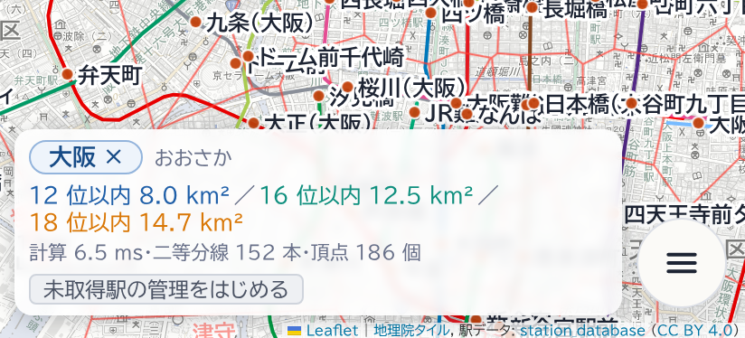
- 駅名とふりがな。駅名の［×］で選択を解除します。
- 未取得・廃止のしるし。
- エリアの面積（km²）。塗り分けがオンのときは、内側の段階から順に、それぞれの色で表示します（例：12 位以内／16 位以内／18 位以内）。
- 計算時間、計算に使った二等分線の本数、境界の頂点の数。
- いちばん下の行のボタン：左に［所属路線］（未取得駅の管理の［路線ごと］を、この駅を含む路線だけに絞って開きます。→ ［路線ごと］）、右端に［未取得にする］／［取得済みにする］。［取得済みにする］は未取得駅の色、［未取得にする］は灰色で表示します。
現在地と指定位置
歩行中・運転中の操作や、立入禁止の場所・私有地・線路への立ち入りはしないでください（→ 機能紹介の注意）。
現在地のボタン
③ の 3 つのボタンの働きは次のとおりです。
| ボタン | 働き |
|---|---|
| 位置情報を利用する | 端末の位置情報の利用を開始・停止します。〈位置情報〉の［位置情報を利用する］と同じです。 |
| 現在地を常に中心に保つ | オンのとき、位置が更新されるたびに現在地を地図の中心に移します。〈位置情報〉の［現在地を常に地図の中心に保つ］と同じです（既定はオン）。 |
| 現在地を中心に表示 | 現在地（指定位置を使っているときは指定位置）を一度だけ地図の中心に移します。位置がまだないときは、位置情報の利用を開始します。 |
上の 2 つのボタンは〈位置情報〉の項目と連動しています。
地図の中心は、メニューと最寄り駅の案内に隠れていない部分の中心です。
地図を手で動かしたとき
現在地を中心に保っている間に地図を手で動かすと、追従を一時的に止めます。止める時間は〈位置情報〉の［地図を手動でスクロールしたとき］で選びます（すぐ戻す／5 秒／15 秒／30 秒／オフ。既定は 15 秒）。［オフ］を選ぶと、手で動かした時点で［現在地を常に地図の中心に保つ］自体がオフになり、自動では戻りません。
止めている間は、［現在地を常に中心に保つ］のボタンに、減っていく輪と残りの秒数を表示します。0 になると現在地に戻ります。地図に指を置いている間は、時間を数えません。
古い位置の表示
最後に位置が届いてから 60 秒たつと、現在地の点が灰色になり、その右下に「3 分前の位置」のように経過時間を表示します。位置情報を利用していないときも、現在地の点は灰色です。
指定位置
地図の駅以外の場所を長押し（PC は右クリック）すると、その地点を現在地とみなします。これを「指定位置」と呼びます。現地に行かずに、ある地点のレーダーの検知対象駅や最寄り駅を確かめられます。
- 指定位置を決めると、［位置情報を利用する］はオフになります。
- 指定位置は再読み込みのあとも保持されます。［位置情報を利用する］をオンにすると、現在地に戻ります。
- 選択中の駅の上で長押しすると、指定位置ではなく取得済み／未取得の切り替えになります（下記）。選択していない駅の上の長押しは、指定位置になります。
レーダーの検知数とアイテム・スキル
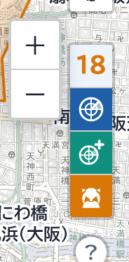
検知数は、「レーダーの検知数（通常時）」と、計算に含めるアイテム・スキルから決まります。レーダーの検知数（通常時）は、アイテム・スキルで増やす前の検知数です（電友のログイン状況によって増えます）。
- レーダーの検知数（通常時）：2〜30（メニューのスライダーは 12 まで、［＋］で 30 まで）。既定は 12 です。
- レーダーブースター：検知数に 4 を加えます。
- なつめのスキル：検知数に 2 を加えます。
既定はすべてオンで、検知数は 12・16・18 の 3 段階になります。
地図のボタン
- 数のボタンは、いま届く最大の検知数を、いちばん外側の段階の色（青・緑・橙）で表示します。
- 数のボタンをタップすると、その横に［＋］［−］が開きます。［＋］［−］はレーダーの検知数（通常時）を 1 ずつ変えます。数のボタンか、ほかの場所をタップすると閉じます。
- その下の 3 つのボタンで、レーダー・レーダーブースター・なつめのスキルを計算に含めるかを切り替えます。オンのボタンは段階の色で塗られます。
- レーダーをオフにすると、数に取り消し線が付き、レーダーブースターとなつめのスキルはタップできなくなります。このときは位置登録（最寄り駅）だけを扱います。
同じ設定は、メニューの先頭の［レーダーの検知数（通常時）］と［計算に含めるアイテム・スキル］でも変えられます。
レーダーブースターの効果時間は扱いません。オンの間は常に計算に含めます。
最寄り駅の案内と順位

① の最寄り駅の案内は、現在地（または指定位置）の最寄り駅のふりがな・駅名・距離を表示します。未取得の駅には「未取得」、廃駅には「廃止」のしるしが付きます。表示は〈表示〉の［最寄り駅の案内を常に表示］（既定はオン）で切り替えます。
- 案内をタップすると、2 位から、いまの検知数（例：18 位）までの一覧が下に開きます。もう一度タップすると閉じます。
- 一覧の駅をタップすると、その駅を地図の中心に表示し、駅名を 4 秒間、枠で囲みます。駅の選択はしません。
- 一覧の下には「オモイダース（〇〇から）で新たに入る駅」を四角い番号で表示します。〇〇は、いまの最寄り駅です。
オモイダース（〇〇から）で新たに入る駅
このアプリは、オモイダースで過去の位置登録を思い出したときのレーダーを、位置登録した駅（最寄り駅）の位置から数えて求めます。一覧の区切りの下には、最寄り駅の位置から数えた検知対象駅のうち、現在地からの検知対象駅に入らない駅を「オモイダース（〇〇から）で新たに入る駅」として表示します（〇〇は最寄り駅の名前）。
距離の数字
既定では、距離は順位の計算と同じ方法で測った値です。並びは順位と一致しますが、地表の実際の距離とは異なります（東西方向は長めに出ます）。実際の距離を表示するには、〈計算設定〉の［距離を実距離で表示］をオンにします（その場合、並びと順位が前後することがあります）。
一覧の区切りの下（オモイダースで新たに入る駅）の括弧内の距離は、いまの最寄り駅（位置登録する駅）からその駅までの距離です。
地図上の順位の番号
⑤ の 2 番目のボタン（〈表示〉の［レーダーの検知対象駅に順位を表示］、既定はオフ）をオンにすると、検知対象駅の点の左上に順位の番号を表示します。
- 丸い番号：現在地（または指定位置）からの順位です。
- 四角い番号：オモイダースで新たに入る駅の、最寄り駅からの順位です。〈表示〉の［オモイダース使用時の検知対象駅にも順位を表示］（既定はオフ）をオンにしたときに表示します。
塗り分けがオンのときは、番号もエリアと同じ段階の色になります。〈表示〉の［順位が変わったときにエフェクトを表示］（既定はオン）がオンのときは、位置の更新で順位が変わった番号に、短時間だけ波紋を表示します。
境界線
〈表示〉で、次の境界線を表示できます。［隣接駅間の境界線］と［レーダー検知対象駅の入れ替わり境界］は、［境界線を表示するズームレベル］（既定は 10 以上）より縮小すると表示しません。
隣接駅間の境界線

最寄り駅が変わる境目の線です（［隣接駅間の境界線を表示］、既定はオン）。線で区切られた区画の中では、最寄り駅、つまり位置登録でアクセスできる駅が同じです。検知数とは関係なく表示します。
境界線に駅名を表示
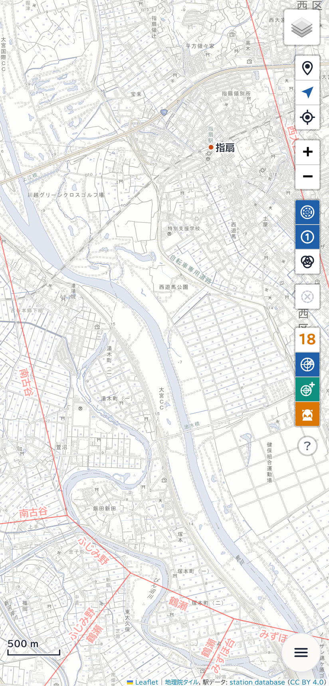
［境界線に駅名を表示］（既定はオン）がオンのとき、ズームレベル 13 以上で、各区画の駅名を、境界線に沿って区画の内側に表示します（駅が画面に見えていない区画だけ）。駅が画面の外にあっても、どの駅の区画かがわかります。
選択駅の順位ごとの境界
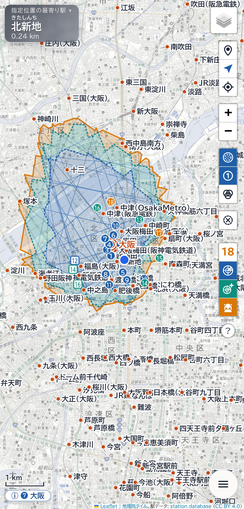
選択駅が 1 位、2 位、3 位……になる地域の境界を、検知数の最大の順位まで重ねて表示します（［選択駅の順位ごとの境界を表示］、既定はオフ）。内側ほど濃く表示します。
境界がまっすぐ交差して見えるのは、隣り合う順位の境界が線の交点で入れ替わるためで、正しい表示です。
レーダー検知対象駅の入れ替わり境界
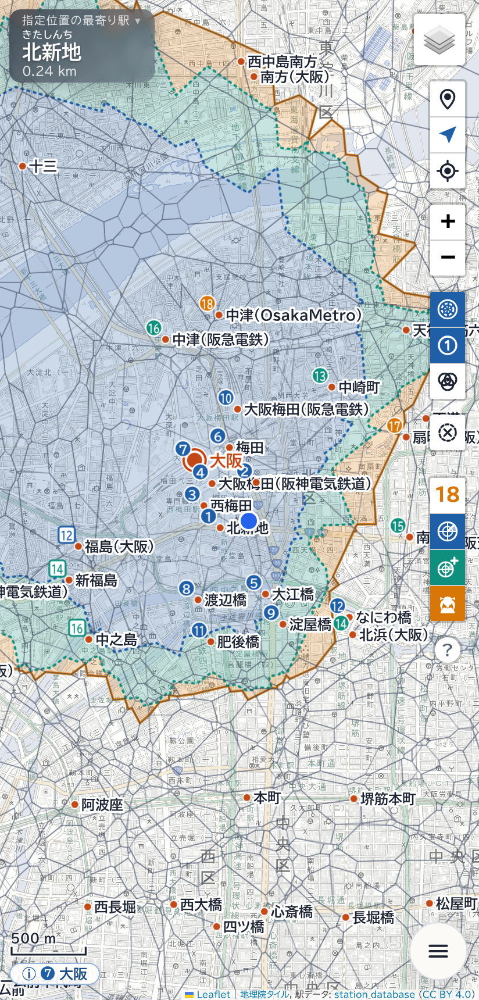
この線を越えると、レーダーの検知対象駅の組み合わせが変わります（［レーダー検知対象駅の入れ替わり境界を表示］、既定はオフ）。区画の中では検知対象駅の組み合わせは同じですが、その中での順位は入れ替わることがあります。
複数選択モード

複数選択モードで選んだ駅の集まりを「グループ」と呼びます。
複数の駅すべてにアクセスできるエリア（共通するエリア）を紫で表示します。⑤ の 3 番目のボタンで、複数選択モードを開始・終了します。
- モード中は、駅をタップするとグループに追加し、もう一度タップすると外します。最大 12 駅です。
- グループの駅は、紫の二重丸と紫の駅名で表示します。
- 画面の下の帯に、グループの駅名と共通するエリアの面積を表示します。駅名の［×］で、その駅を外します。
- ⑥［選択解除］は、モード中は「グループの駅をすべて解除」になります。解除してから 8 秒間は、お知らせの［元に戻す］で取り消せます。
- 2 駅以上で共通するエリアがないときは、帯に「選択中の n 駅に共通するエリアがありません」と表示します。
- 2 駅以上のときの面積は、画素を数えて求めた近似値です。
- モード中は、それまで選んでいた駅のエリアを表示しません。モードを終えると元に戻ります。グループの駅はモードを終えても保持されます。
- 〈通知〉の［選択駅のエリアに出入りしたら通知］がオンのとき、モード中は共通するエリアへの出入りを通知します。
取得済み／未取得の切り替え
未取得駅（→ 未取得駅）は、地図上で色と大きさを変えて表示します。
- 選択中の駅を長押し（PC は右クリック）すると、取得済み／未取得を切り替えます。
- 選んだ駅の情報の帯の［未取得にする］／［取得済みにする］でも切り替えられます。
- 切り替えてから 8 秒間は、お知らせの［元に戻す］で取り消せます。
路線ごと・都道府県ごとの登録や CSV ファイルの読み込みは、未取得駅の管理をご覧ください。
コンパクト表示
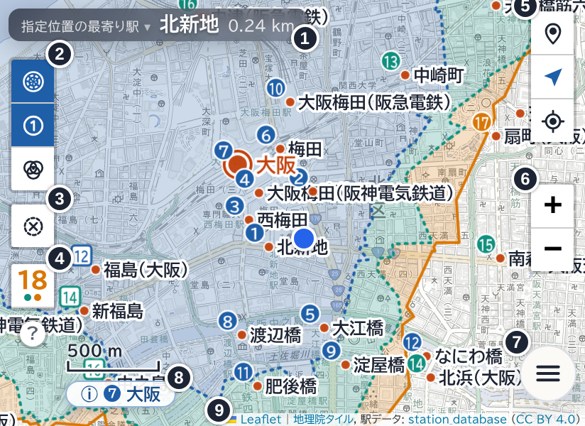
画面分割などで画面の高さが低いときは、ボタンを小さくし、数を減らしたコンパクト表示になります。〈操作・画面〉の［コンパクト表示］で選びます（自動／オン／オフ。既定は自動）。［自動］では、スマートフォンで画面の高さが低いときにコンパクト表示にします。
右側には現在地のボタンと拡大・縮小だけを置き、表示ボタン・選択解除・レーダーの数は左上（最寄り駅の案内の下）に移します。レイヤーのボタンは表示しません。地図の種類はメニューの〈マップ〉で選びます。
| 番号 | 名前 | 説明 |
|---|---|---|
| ① | 最寄り駅の案内 | 1 行で表示し、ふりがなを省きます。 |
| ② | 表示ボタン | 通常の表示の ⑤ と同じ 3 つのボタンです。 |
| ③ | 選択解除 | 通常の表示の ⑥ と同じです。 |
| ④ | レーダーの数 | 数のボタンだけを表示します。レーダーブースター・なつめのスキルがオンのときは、数の下に緑・橙の小さな点が付きます。タップすると、［−］［数］［＋］とアイテム・スキルの 3 つのボタン、［×］が横に並んだ小窓が開きます。 |
| ⑤ | 現在地のボタン | 通常の表示の ③ と同じ 3 つのボタンです。 |
| ⑥ | 拡大・縮小 | 地図のズームレベルを変えます。 |
| ⑦ | メニュー | 設定画面（メニュー）を開きます。 |
| ⑧ | 選んだ駅の情報 | 選んだ駅の名前のバッジです。 |
| ⑨ | 出典表示 | 地図と駅データの出典です。 |
メニューを全画面で開くとき
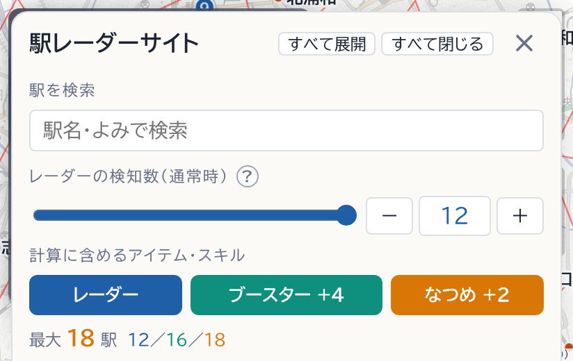
メニューを開いたときに上に残る地図の高さが 120 px 未満になる画面では、メニューを全画面で開きます。目安は、コンパクト表示で画面の高さが 391 px 以下、通常の表示で 286 px 以下です。このときは、メニューを開閉しても地図は動きません。また、［駅を検索］で駅を選ぶと、メニューを閉じてその駅を表示します。
幅の狭い画面（ポップアップ表示など）
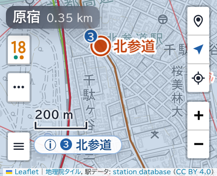
画面の幅が 300 px 未満のとき（Android のポップアップ表示で小さな窓にしたときなど）は、ボタンをさらに減らして並べます。［コンパクト表示］が［オフ］でなければ、自動でこの表示になります。
- 右に現在地の 3 つのボタンと拡大・縮小、左上にレーダーの数と［⋯］、左下にメニューのボタンを置きます。
- ［⋯］をタップすると、表示ボタン・選択解除・使い方［?］がその下に並びます。
- レーダーの数をタップすると、［−］［数］［＋］とアイテム・スキルのボタンがその下に並びます。
- 最寄り駅の案内の一覧が地図をほぼ覆うときは、一覧の駅をタップすると、一覧を閉じてその駅を表示します。一覧を開閉しても地図は動きません。
ブラウザを裏に回すと、位置情報の取得が止まります。ほかのアプリと同時に使うときは、画面分割やポップアップ表示で、このページを表に出したままにしてください。
未取得駅
はじめに
このアプリでは、駅メモでまだアクセスしたことのない駅を「未取得駅」、アクセスしたことのある駅を「取得済み」と呼びます。取得済み／未取得は、利用者が自分で記録するものです。このアプリは、ゲームのサーバーやアプリから取得状況を読み出しません。
未取得駅を登録すると、地図上で目立たせたり、レーダーの検知対象になったときに通知したりできます。
はじめに、メニューの〈未取得駅〉の［管理機能の利用をはじめる］をタップして、はじめるときの取得状況を選びます。
- すべての駅を未取得としてはじめる：アクセスした駅を、取得済みにしていきます。取得済みの駅が少ない場合に適しています。地図上のすべての駅を未取得駅の色で強調表示します（色は〈マップ〉の［色の設定］、強調表示のオン／オフは〈表示〉の［未取得駅を強調表示］で変更できます）。
- すべての駅を取得済みとしてはじめる：まだアクセスしていない駅を、未取得にしていきます。未取得の駅が少ない場合に適しています。
- CSV ファイルを読み込んではじめる（→ CSV ファイル）。CSV ファイルは、利用をはじめたあとでも読み込めます。
利用をはじめるまでは、すべての駅をいつもの表示にします。選択駅情報欄のボタンや、選択中の駅の長押しからも、はじめるときの画面を開きます。
管理画面を開く
利用をはじめたあと、メニューの〈未取得駅〉の［管理画面を開く］をタップすると、地図の上に管理画面が開きます。上部のタブで［路線ごと］［まとめて・ファイル］［未取得駅の一覧］を切り替えます。［閉じる］で地図に戻ります。
管理画面で駅名をタップすると、管理画面を隠して地図にその駅を表示します。画面下部の［‹ 未取得駅の管理に戻る］で管理画面に戻ります。
［路線ごと］

路線ごとに、駅を路線の順に並べて取得状況を記録します。
- 路線一覧：［路線名検索］で絞り込みます。並び順は［近い順］［都道府県順］［未取得が多い順］から選びます。［未コンプ路線のみ］（既定オン）では、未取得駅のある路線と、開いている路線だけを表示します。各路線に、取得済みの駅の数と全駅の数、進み具合の棒を表示します。棒は、取得済みの分を青、未取得の分を薄い青で表し、すべて取得済みの路線（コンプ済み）は薄い金色で表します。
- 1 駅ずつ：駅の右のボタンをタップすると、取得済み／未取得を切り替えます。
- 路線の全駅：［全部 取得済み］［全部 未取得］をタップします。
- ほかの路線に乗り換えられる駅：駅名の横に、その駅が属する路線の数（［2 路線］など。2 列で表示していて右の列が狭いときは［⇄2］）を表示します。ほかの所属路線に未取得駅のある路線（未コンプ路線）があるときは、未取得駅の色で表示します。タップすると、左の路線一覧をその駅の所属路線だけに絞ります。［×］で元の一覧に戻ります。
- 範囲：駅名を長押しすると、その駅が始点になります。続けて終点の駅をタップします。画面下部に出る窓で［取得済みに］［未取得に］を選びます。
画面の幅が広いときは、路線一覧と駅の並びを左右に並べて表示します。
地図で選んだ駅の情報の［所属路線］から開くと、路線一覧にはその駅を含む路線だけを表示します（［路線名検索］と［未コンプ路線のみ］は使いません。並び順は選べます）。路線一覧の上に「駅名 の所属路線」を表示し、一覧の先頭の路線を開きます。駅の並びでは、その駅を色付きの枠で示します。ほかの路線を開いたときも同じです。［×］で通常の路線一覧に戻ります（開いている路線はそのまま）。未取得駅の管理を閉じたときも、通常の路線一覧に戻ります。
［まとめて・ファイル］
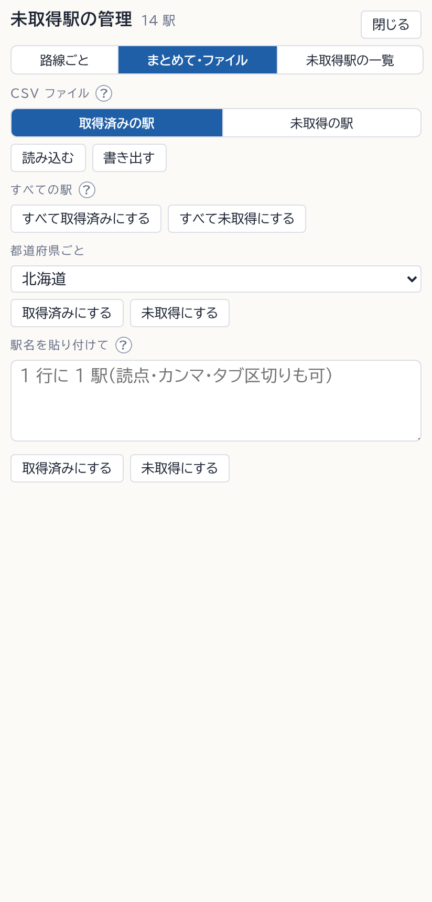
- ［CSV ファイル］：CSV ファイルの［読み込む］［書き出す］です（CSV ファイル）。
- ［すべての駅］：［すべて取得済みにする］［すべて未取得にする］。
- ［都道府県ごと］：都道府県を選び、［取得済みにする］［未取得にする］をタップします。
- ［駅名を貼り付けて］：駅名を 1 行に 1 駅（読点・カンマ・タブ区切りも可）で貼り付け、［取得済みにする］［未取得にする］をタップします。駅データの駅名と一致した駅だけを変更し、一致しなかった駅名は下に表示します。全角の括弧と末尾の「駅」はそのままでも照合できます。
［未取得駅の一覧］
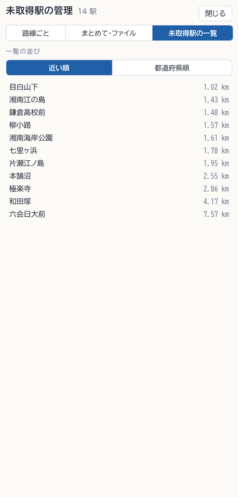
未取得駅を一覧にします。［一覧の並び］は［近い順］（現在地、なければ地図の中心からの距離）か［都道府県順］です。駅名をタップすると、その駅を選択して地図に表示します。
元に戻す
まとめての変更と地図での切り替えは、変更してから 8 秒間、画面下部のお知らせの［元に戻す］で取り消せます。［路線ごと］の 1 駅ずつの切り替えはお知らせを出しません。もう一度ボタンをタップすると元に戻ります。
地図での表示と切り替え
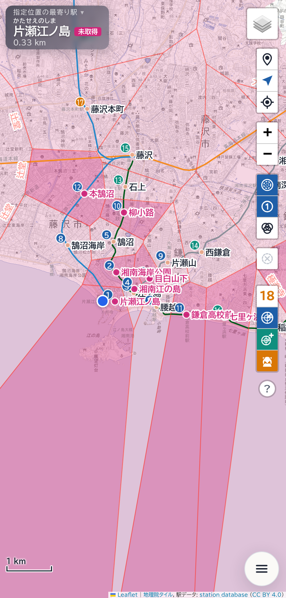
〈表示〉の［未取得駅を強調表示］がオンのとき、未取得駅を目立つ色と大きさで表示し、取得済みの駅を淡い色で表示します。［未取得駅にアクセスできるエリアを表示］をオンにすると、未取得駅に位置登録でアクセスできるエリアと、レーダーでアクセスできるエリアを塗ります。位置登録のエリアのほうが濃く表示されます。
地図で 1 駅を切り替えるときは、駅をタップして選択してから、その駅を長押し（PC は右クリック）します。画面下部の選んだ駅の情報の［未取得にする］［取得済みにする］でも切り替えられます。選択していない駅の上で長押しすると、指定位置になります。
CSV ファイル
［まとめて・ファイル］の［CSV ファイル］で、取得状況を CSV ファイルから読み込んだり、CSV ファイルに書き出したりできます。［取得済みの駅］［未取得の駅］で、ファイルがどちらの駅の一覧かを選びます（既定は［取得済みの駅］）。
読み込める形式
- 1 行目が見出しで、「駅名」の列が必要です。ほかの列は使用しません。
- 駅名は、前後の空白を除いて、駅データの駅名と完全に一致するものだけを使用します。駅データの駅名は駅メモと同じ表記です（例：区別のための括弧書きを含む）。
- 文字コードは UTF-8（BOM 付きも可）です。UTF-8 として読めないときは Shift_JIS として読みます。
- 見出しに「取得済みにした日時」があれば取得済みの駅の一覧、「未取得にした日時」があれば未取得の駅の一覧とみなします。どちらもなければ、［取得済みの駅］［未取得の駅］の選択に従います。
書き出しの形式
［取得済みの駅］では「駅名」「取得済みにした日時」、［未取得の駅］では「駅名」「未取得にした日時」の 2 列で書き出します。UTF-8（BOM 付き）です。日時のわからない駅は空欄です。このアプリで書き出したファイルは、そのまま読み込めます。
読み込む前の確認
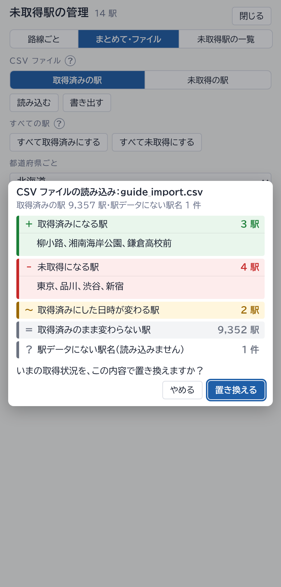
読み込むと、いまの取得状況との違いを表示します。［置き換える］をタップすると、いまの取得状況をファイルの内容で置き換えます。［やめる］で取りやめます。
| 区分 | 意味 |
|---|---|
| ＋ 取得済みになる駅 | いまは未取得で、読み込むと取得済みになる駅 |
| − 未取得になる駅 | いまは取得済みで、読み込むと未取得になる駅 |
| ～ 取得済みにした日時が変わる駅 | 取得済みのままで、記録した日時が変わる駅 |
| ＝ 取得済みのまま変わらない駅 | 取得済みのままで、日時も変わらない駅 |
| ？ 駅データにない駅名 | 駅データの駅名と一致しなかった名前。読み込みません。 |
区分の行をタップすると、その駅名を表示します（最大 200 駅）。
保存の場所
取得状況は、この端末のブラウザの中にだけ保存します。外部には送信しません。駅は駅データの ID で記録するため、駅データに新しく追加された駅は未取得になります。
オフラインとインストール
電波の届かない場所で使う
一度開いたページは、電波が届かない場所でも開けます。駅データはページに含まれているため、エリアの計算もできます。
背景の地図は、地理院の地図（［地理院 淡色］［地理院 標準］）で表示した範囲の画像だけを端末に保存します。範囲を指定してまとめて保存する機能はありません。機内などで使用する場合は、出発前に行き先を地理院の地図で一度表示しておいてください。
- 保存する枚数の上限は、〈オフライン〉の［保存する地図の上限］で選びます（既定 3,000 枚、約 0.1 GB）。上限を超えると、古いものから削除します。
- OpenStreetMap と OpenRailwayMap の地図は保存しません（配信元の利用方針のため）。
- 端末の空き容量が少ないと、ブラウザが保存したデータを削除することがあります。
ホーム画面に追加する
ホーム画面に追加すると、アプリのように全画面で開けます。
- Android の Chrome：メニュー（︙）の「インストール」または「ホーム画面に追加」を選びます。
- iPhone・iPad の Safari：共有ボタンの「ホーム画面に追加」を選びます。
ホーム画面から開いたときは、ブラウザの再読み込みボタンがありません。再読み込みは、メニューの〈再読み込み〉の［ページを再読み込み］で行います。
新しいバージョンのお知らせ
新しいバージョンが公開されると、画面下部に「新しいバージョン（番号）があります」と表示します。駅データだけが更新されたときは「駅データの更新があります（日付）」と表示します。［再読み込み］をタップすると、新しいものに切り替わります。［×］で閉じます。
確認は、アプリを前面に戻したときと、開いている間 30 分ごとに行います。
新しいバージョンに切り替わったあとに開くと、前回お使いのバージョンからの変更点（更新履歴のうち、その間のバージョンの項目）を 1 回表示します。［更新履歴をすべて表示］をタップすると、更新履歴のページを開きます。